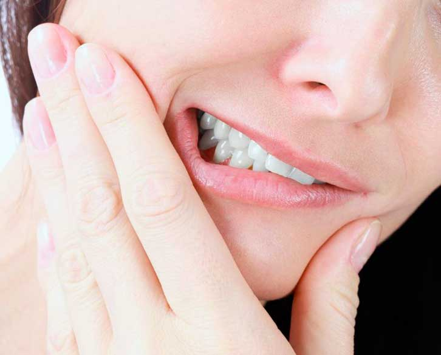

Za većinu ljudi, osnove dobre higijene zuba se uče od najranijeg uzrasta - i to sa dobrim razlogom. Zubi služe višestrukim svrhama, od kojih su svi važni u različitim stepenima. Sposobnost osobe da žvače je možda glavni razlog za zube, jer pomaže u probavi hrane. Izgled jedne osobe, od osmeha do oblika lica, takođe zavisi od njihovih zuba. Međutim, kao korisni i važni kao zubi, oni nisu neuništivi. U stvari, oni su podložni brojnim problemima koji potencijalno mogu dovesti do njihovog gubitka. Srećom, ovi problemi se često mogu sprečiti ako se osoba pridržava dobrih stomatoloških navika. Da bi se razvile ove navike, važno je razumeti koje su potencijalne prijetnje i kako ih izbjeći.
Los Zadah
Halitoza, koja se obično naziva lošim dahom, problem je u kome jedan dah osobe ima neprijatan ili neugodan miris. Problemi sa lošim dahom mogu biti uzrokovani brojnim stvarima, kao što su dugotrajne čestice hrane u ustima, nedavno konzumirane neugodne namirnice, suhoća usta, loša higijena zuba, infekcije usta ili bolest. Rješavanje lošeg daha zavisi od njegovog uzroka. Za neke, loš dah se može riješiti jednostavnim pranjem zuba da se ukloni nakupljanje plaka i četkanjem jezika četkom ili jezikom za uklanjanje bakterija. Kada je stomatološka bolest ili infekcija izvor, liječenje od strane stomatologa može biti potrebno. Dobra higijena zuba je takođe važan deo sprečavanja lošeg daha. Osim toga, četkice za zube treba zamijeniti svaka tri mjeseca, a ljudi trebaju zakazati redovite stomatološke preglede i čišćenje. Loš dah uzrokovan suhim ustima može se spriječiti žvakanjem gume ili pijenjem vode u redovnim intervalima
Gum Disease
Gumice su tkivo u ustima koje služi kao potpora zubima. Kada se zaraze zbog toksina nastalih plakom, to se naziva parodontna bolest, obično poznata kao bolest desni. Postoje dva osnovna tipa bolesti desni: gingivitis i parodontitis. Od njih dvoje, gingivitis je blaži oblik i reverzibilan je. Kada ljudi imaju gingivitis, mogu primetiti da su im desni crvene i otečene, a ponekad može doći do krvarenja. Parodontitis se javlja kada se gingivitis ne tretira. To je uznapredovala faza bolesti desni u kojoj se plak širi iza linije desni. Kada osoba ima ovu vrstu bolesti desni, bakterije mogu prouzrokovati pogoršanje desni i uništiti kosti koje podupiru zube. Pored toga, može dovesti do gubitka zuba i / ili gubitka zuba.
Prevencija je ključna kada se radi o bolesti desni. Važne su pravilne tehnike četkanja i zubnog konca za uklanjanje plaka i bakterija. Zube treba brusiti nakon obroka, a zube treba zubati najmanje jednom dnevno kako bi se uklonili skriveni ostaci i plak. Osobe sa određenim zdravstvenim stanjem, kao što je dijabetes, treba da razgovaraju sa svojim zubarima o svom zdravlju i riziku od bolesti desni. Pravilno održavanje ovih zdravstvenih stanja takođe može pomoći da se smanji rizik od bolesti desni. Tretman bolesti desni varira od nekirurških procedura do tretmana koji zahtevaju operaciju. Hirurške procedure uključuju operaciju transplantacije desni i smanjenje parodontnog džepa. Nehirurški tretmani uključuju skaliranje i planiranje korena i antibiotike za tretiranje bilo koje infekcije
Tooth Sensitivity
Osetljivi nervi zuba pokriveni su slojem nazvanim dentin. Dentin može biti izložen zbog faktora kao što su povlačenje desni i / ili bolesti desni, starost, prekomerno četkanje ili čak i proizvodi za izbjeljivanje zuba. Kada dođe do izlaganja dentinu, osoba može da doživi iritaciju ili bol zbog hrane koja je slatka, topla, hladna ili kisela. Čak i disanje vrlo hladnog vazduha može izazvati bol. To je stanje koje se naziva osjetljivost zuba. Bol koji ljudi osećaju je posledica mnogih mikroskopskih kanala u dentinu koji vode do unutrašnjeg dela zuba koji se naziva pulpa. Pulpa zuba se sastoji od nerava i krvnih sudova. Kada je dentin izložen, nervi postaju iritirani kada se pojedi neka hrana.
Srećom, osetljivost zuba se može sprečiti dobrom oralnom negom. Pravilnim četkanjem četkicom za zube mekanim vlaknima, čišćenjem zuba od zuba i smanjenjem potrošnje kiselih i slatkih namirnica, moguće je spriječiti recesiju desni koja dovodi do osjetljivosti. Ako je osetljivost zuba već problem, potrebno je lečenje. Potreban je stomatološki pregled kako bi se utvrdio stvarni uzrok osetljivosti. Tretman može uključivati kućna rešenja, kao što je ispiranje fluoridom ili četkanje sa zubnom pastom za desenzibilizaciju ili pasta za zube sa visokim sadržajem fluorida. Tretmani u kancelariji mogu uključivati fluoridne lakove preko površine korena, plombe za pokrivanje izloženih korena, ili upotrebu plastičnih smola ili dentinskih zaptivača.
Zuti Zubi
Promjena boje zuba, ili žutilo zuba, je stanje u kojem se zubi zamrljaju ili oboje. Postoje brojni potencijalni uzroci žutog zuba, uključujući višak fluorida, nakupljanje plaka i / ili kamenca, starenje, pušenje, lekove ili određene vrste hrane. Sprečavanje žutila zuba nije uvek moguće, posebno kada je povezano sa genetikom. Za druge ljude, žutilo se može sprečiti izbegavanjem određenih namirnica koje su kisele ili hrane sa visokim sadržajem tanina i koje mogu da zaprljaju zube, ili promenom načina života, kao što je prestanak pušenja. Čišćenje zuba svakih šest meseci od strane zubnog higijeničara takođe može da pomogne da se zubi ne požute. Da bi se tretirao ovaj problem, osoba može da vidi svog stomatologa o procedurama izbeljivanja zuba u kancelariji. Izbeljivanje zuba preko šanka je takođe opcija za mnoge. Druge opcije za diskusiju sa stomatologom su furniri ili zubna vezivanja za bolji izgled.
Tooth Decay
Kada se na zubima formira plak, on proizvodi kiseline. Ove kiseline, koje su ljepljive, prianjaju na zube i napadaju caklinu. Ako se ne ukloni pravilno, plak može oštetiti zubnu caklinu. Ovo stanje se naziva kvarenje zuba, a ako se ne liječi, može dovesti do karijesa ili malih rupa u zubima. Prema medicini Univerziteta u Chicagu, propadanje zuba je bolest koja je toliko rasprostranjena da je češća samo obična prehlada. Kvarenje zuba je uzrokovano nepravilnim četkanjem ili neuspjehom redovnog čišćenja zuba, zdravstvenim stanjima kao što su dijabetes, konzumiranje slatke hrane, suha usta i pušenje. Nedostatak fluorida takođe doprinosi propadanju zuba.
Kvarenje zuba je visoko preveniranje sa osnovnim oralnim održavanjem, kao što je svakodnevno čišćenje zubnim koncem i četkanje zuba dva minuta nakon svakog obroka ili, najmanje, dva puta dnevno. Kada četkate zube, važna je fluoridna pasta za zube, jer fluorid pomaže zubima da se odupru propadanju učvršćivanjem cakline. Lečenje blagog kvarenja zuba može se rešiti poboljšanjem nečije navike u pogledu stomatološke higijene i upotrebom dnevnog ispiranja usta fluorida. Ako kvarenje zuba dovodi do stvaranja šupljina, može biti potrebno liječenje na osnovu njegove ozbiljnosti. Mogućnosti tretmana uključuju uklanjanje karijesa i punjenje rupe zubnim punjenjem, zamjenu dijela zuba krunom, ili uklanjanje inficirane pulpe tokom postupka poznatog kao korijenski kanal. Kvarenje zuba može postati toliko loše da ove mogućnosti liječenja nisu održive. Kada je to slučaj, stomatolog može predložiti uklanjanje zuba.
Erozija Zuba
Zubna caklina je najteža supstanca u ljudskom telu; međutim, kiseline iz bakterija i određene hrane i pića su nagrizajuće i mogu početi da troše zubnu caklinu. Kada se to dogodi, to se naziva erozijom zuba. Pored bakterija i kiselih namirnica i pića kao što su sokovi i sokovi, erozija zuba može biti uzrokovana i probavnim problemima kao što je povraćanje, jer je želučana kiselina jako korozivna. Ovo je posebno problematično za ljude koji pate od poremećaja ili bolesti koje uzrokuju česte pojave povraćanja. Erozija zuba može biti pogoršana suvim ustima, jer slina djeluje kako bi neutralizirala kiseline koje korozuju zube u ustima.
Četkanje četkicom za zube mekanim vlaknima nakon jela i pića je samo prvi korak u sprečavanju erozije zuba. Konzumiranje sira ili konzumiranje mlijeka može pomoći da se neutrališu kiseline u ustima. Smanjenje količine konzumiranih kiselih pića je takođe veliki preventivni korak. Slina se takođe može stimulisati žvakanjem štapića gume. Kada kupujete žvakaće gume, gume koje ne sadrže šećer i koje sadrže ksilitol su najefikasnije i najbezbednije za zube.
Mouth Sores
Postoje razne vrste rana koje se mogu pojaviti na desni, jeziku, unutrašnjim obrazima, usnama ili na dnu usta. Mogu da se kreću od blage rane koje se javljaju zbog iritacije, kao što je griženje obraza, do ozbiljnijih rana koje ukazuju na bolest kao što je rak usta. Najčešće čireve u ustima uključuju rak i čireve. Rane rane su nezarazne i mogu biti uzrokovane hormonskim promjenama, stresom, slabljenjem imunološkog sistema, određenim zdravstvenim stanjima ili nedostatkom vitamina kao što je željezo ili B12. Ove vrste čireva su češće kod žena nego kod muškaraca i imaju žućkast izgled sa belim središtem i crvenim spoljašnjim prstenom. Herpes simplek virus uzrokuje čireve koji su, za razliku od raka, vrlo zarazni. Ove rane se pojavljuju samo na ustima kada su izazvane stresom, izlaganjem suncu, promjenama hormona, ili povišenom temperaturom i bolešću. Ova vrsta boli počinje kao blister grozdovi pre nego što se prekine.
Prevencija rane u ustima zavisi od vrste upale. Ljudi koji često dobiju čireve od ugriza do unutrašnjeg obraza mogu ih spriječiti žvakanjem sporije i pažljivije. Upotreba nege kada pijete vruću hranu može pomoći u sprečavanju opekotina. Canker i hladne rane mogu se spriječiti smanjenjem stresa, što je okidač za oba. Antivirusni lekovi se takođe mogu dati kako bi se sprečile pojave hladnih rana.
Tretiranje jednostavnih rana koje se javljaju usled iritacije obično uključuje ublažavanje iritacije. Osoba može uzeti bezbolna sredstva za ublažavanje bolova ili ispirati grlo sa hladnom ili slanom vodom. Rane rane se mogu tretirati nanošenjem paste sode bikarbone i vode. Može biti od pomoći i hladne ranice i upotreba krema bez recepta i sredstva za sušenje. Lekar treba da se vidi ako se radi o novom bolu bez vidljivog uzroka ako je bolest popraćena groznicom, teškim gutanjem ili slinjenjem. Vežbe koje traju nekoliko nedelja takođe treba da vide lekar. Lečenje od strane medicinskih stručnjaka zavisi od vrste boli i njene ozbiljnosti.
Toothaches
Bol koji zrači iz zuba naziva se zubobolja. Može biti više uzroka za zubobolju; međutim, jedna od najčešćih je uzrokovana upalom pulpe koja se naziva pulpitis. Pulpitis je rezultat karijesa i karijesa. Zubobolja može biti uzrokovana i drugim problemima, kao što su erupcija umnjaka, infekcije desni ili napukli ili na drugi način oštećeni zubi.
Zubobolja se može sprečiti kada osoba preduzme korake da spreči karijes i karijes. Ovo uključuje redovno četkanje i čišćenje koncem i konzumiranje zdrave ishrane. Ako osoba ima zubobolju, treba da se konsultuje sa stomatologom da bi utvrdila tačan uzrok. Ovo je važno, jer zubobolja koja traje može ukazati na to da zub umire i da zahteva hitnu akciju. Zubobolja koja je praćena oticanjem ili temperaturom takođe može ukazivati na infekciju koja se može proširiti. Stomatolozi tretiraju zubobolje prema osnovnom uzroku. Lečenje se može kretati od antibiotika do ekstrakcije zuba.